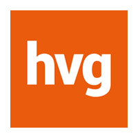
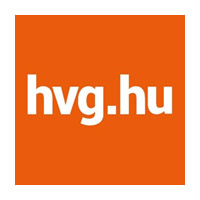
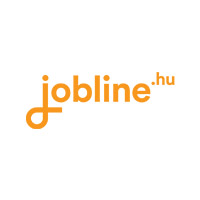
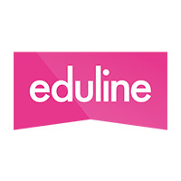

A HVG közel negyven éve kiáll a független, sokoldalú tájékoztatás és a szabad véleménynyilvánítás mellett.
Kik vagyunk?
A HVG Kiadó egyike Magyarország független, hiteles és innovatív tartalomszolgáltatóinak. Magazinokat, időszaki kiadványokat, könyveket jelentetünk meg, valamint internetes portálokat, mobil oldalakat üzemeltetünk. A HVG Kiadó első terméke az 1979 óta működő HVG hetilap. Legnagyobb elérésű platformunk a hvg.hu, ahol hetente több mint 1,5 millió ember tájékozódik híreinkből és elemzéseinkből. Mi rendezzük Magyarország legnagyobb karrierrendezvényét, a HVG Állásbörzét, évente több tucat konferenciát és a Budapest Autó Showt is. A HVG Könyvkiadó évi mintegy 80 mű megjelentetésével az egyik legnagyobb kiadó. Népszerű könyveket publikálunk különböző témakörökben, a menedzsmenttől a pszichológián át az életrajzokig és gyerekkönyvekig.
Azon dolgozunk, hogy látványos, közérthető és érdekes multimédiás tartalmat kínáljunk olvasóinknak és vásárlóinknak.
Értékeink
tudás
 minőség
minőség
 hitelesség
hitelesség
 függetlenség
csapatmunka
etikus működés
függetlenség
csapatmunka
etikus működés
 rugalmasság
innováció
kreativitás
olvasói elégedettség
rugalmasság
innováció
kreativitás
olvasói elégedettség
 lojalitás
lojalitás
 bátorság
bátorság
Extrák
XBOX
 biciklizés
biciklizés
 csocsó
futás
bogrács
csocsó
futás
bogrács
 kávé, tea
függőágy
szülinap
kávé, tea
függőágy
szülinap
 Mozi
színház
Mozi
színház
 csapatépítés
oktatás
csapatépítés
oktatás
Főbb termékeink
- 
- 
-

-

-

- 
- 
HVG hetilap
A HVG közel 40 éve Magyarország meghatározó gazdasági, politikai, közéleti magazinja. Hetilapunk legfontosabb alapértékei a tényszerű, hiteles, megbízható, objektív és független tájékoztatás. Olvasóink a HVG-t leginkább emiatt, továbbá a sokszínű, érdekes tematika, az összefüggéseket feltáró háttérelemzések, és a hagyományosan erős nemzetközi kitekintés miatt kedvelik.
A HVG hetilap digitális formában - a mobiltelefonra vagy tabletre letölthető DHVG applikáción keresztül – is olvasható.
HVG.hu
A hvg.hu hetente több mint másfél millió emberhez juttat el híreket, elemzéseket. Hírportálunk kiemelt figyelmet szentel Magyarország és a világ gazdasági, közéleti, politikai, gazdasági híreinek és azon összefüggések feltárásának amelyek hatást gyakorolhatnak olvasóink mindennapjaira, illetve jövőjére. A véleményrovatunk publicisztikákkal, jegyzetekkel és vitákkal segíti az olvasót a hírek értelmezésében és értékelésében. Egyik legolvasottabb rovatunk a Tech-rovat. Fontos szerep jut a kulturális, illetve az életmódhoz, családhoz, gyerekneveléshez, gasztronómiához kötődő írásoknak, sorozatoknak, tanácsadó cikkeknek is.
HVG Könyvek
A világpiacon már sikert aratott, gondolatébresztő és inspiráló kiadványok neves szerzőktől – ezt kínálja a HVG Könyvek! A HVG a legkülönbözőbb témakörökben – üzlet, menedzsment, pszichológia, önismeret, népszerű tudomány, életrajz, életmód és tényfeltáró irodalom, gyermekkönyvek – ad ki bestsellereket. Hazai és külföldi szerzőink között vannak Nobel-díjas tudósok, pszichológusok, közgazdászok, orvosok és sikeres üzletemberek. Olyan személyiségek, mint Richard Thaler, Sir Alex Ferguson, Daniel Kahneman, Chris Anderson, Richard Branson, Malcolm Gladwell, Carol S. Dweck, Feldmár András, Stipkovits Erika, Sir Ken Robinson, Dan Ariely, Seth Godin, Charles Handy, Kornai János és Walter Isaacson. A gyermekeknek szóló kiadványaink a szórakoztatva tanítás szándékával készülnek.
Különszámok
A HVG-különszámok olyan tematikus kiadványok, amelyek a vállalkozások számára részletesen elmagyarázzák az aktuális jogszabályváltozásokat. Különszámokat jelentetünk meg adózás, társadalombiztosítás, munkajog és céges autózás témakörökben. A kiadványok a szakmai célcsoportok – adózási szakemberek, könyvvizsgálók, jogászok vagy flottakezelők - számára nélkülözhetetlenek, egész évben használják munkájukhoz.
HVG Extra Pszichológia magazin
A HVG lapcsaládjába tartozó életmódmagazin 2012 óta jelenik meg. A HVG Extra Pszichológia hozzásegít a jobb önismerethez és a tudatosabb élethez. Negyedévente megjelenő, tematikus lapszámaiban olyan érdekes és informatív témákról olvashatsz, amelyek nap mint nap felbukkannak az életünkben. A magazin fő pillérei az önismeret, a párkapcsolat, a család és a karrier. Az aktuális és sokakat foglalkoztató tartalom szakmailag megalapozott, merész és véleményformáló. Célunk, hogy a pszichológiai témákat ne csak szakmailag hitelesen, hanem közérthetően is dolgozzuk fel.
HVG-szemináriumok & konferenciák
Tudásátadás és inspiráció megbízható forrásból: a HVG Szemináriumok és Konferenciák gondolatébresztők és gyakorlatorientáltak. Képzéseink részben a HVG Könyvekhez kapcsolódnak. Rendezvényeinkhez a kiadó népszerű üzleti, menedzsment, vállalati pszichológia és motiváció témájú könyvei szolgálnak alapként. Szakmailag elismert konferenciáink HR és toborzás, marketing és cégautós tematikákra építenek. Szervezeti- és vezetőfejlesztési, mindfulness és motivációs, illetve sales témájú szemináriumainkat pedig gyakorlatorientált tudásátadás jellemzi.
Jobline
A jobline.hu állásportál 2000-es indulása óta több százezer munkavállalónak és tízezer feletti munkáltatónak segített abban, hogy egymásra találjanak. Azért dolgozunk, hogy több ezer álláslehetőség között válogathassanak azok, akik munkát keresnek. Több mint 260 ezren vannak, akik feltöltötték önéletrajzukat a jobline.hu-ra, ahol a munkáltatók Magyarország egyik legnagyobb CV-adatbázisában kereshetnek szakembereket.
A munkavállalókat és munkáltatókat szakmai kiadványokkal is segítjük, évente kétszer pedig találkozhatnak is velünk a legnagyobb hazai karrierrendezvényen, a HVG Állásbörzén.
Adózóna
Az Adózóna Magyarország mértékadó, előfizetéses modellben működő adózási szakportálja, amely már több mint tíz éve naponta frissülő tartalmat nyújt az adózás, a számvitel, a társadalombiztosítás, a munka- és cégjog témaköreiben. A folyamatosan változó jogszabályi környezetben megbízható fogódzót jelent a jogszabályok értelmezéséhez. A portál kiemelkedő szakmai színvonalával és naprakészségével vált az adózással foglalkozó szakemberek kedvelt mindennapi munkaeszközévé.
Eduline
Az eduline.hu Az eduline.hu piacvezető oktatási oldal szakmai híreivel, elemzéseivel több mint 10 éve segíti az érettségire készülő és felsőoktatási tanulmányaikat megkezdő fiatalokat az oktatási rendszer útvesztőjében. Szakportálunk hetente közel 100 hírrel és szórakoztató anyaggal jelentkezik az oktatás világából. Célunk, hogy mind a felsőfokú tanulmányaikra készülő érettségizők, mind a pedagógusok, oktatási szakértők, szülők, felnőttképzést keresők, de a és pályakezdő fiatalok is mindig könnyen érthető, friss és hiteles tartalommal találkozzanak nálunk.
A mi történetünk
HVG-ről mondták
Reviczky Zsolt
újságíró/fotóriporter
Mi a jó a HVG-ben? Az elfogulatlan tájékoztatásra való törekvés, a csapat és a magas színvonalú munka, szakmaiság.

Czeglédi Fanni
újságíró
A HVG-ben mindenki a csapat teljes jogú tagja és egyformán elkötelezett az objektivitás, a függetlenség és a sokszínűség iránt.

Kormos Ágnes
munkaügyi vezető
Szeretem, hogy az emberek odafigyelnek egymásra és komolyan veszik a munkájukat. Jó az is, hogy nem vagyunk olyan nagy cég, hogy ne ismerhessük egymást, ugyanakkor elég nagyok vagyunk ahhoz, hogy mindenkinek meglegyen a maga jól meghatározott feladatköre.
Ferencz Alexandra
scrum master
Nekem a HVG mint hetilap mindig nagyon szimpatikus volt, mert színvonalas, komplex elemzéseket tartalmaz és nagyon nem utolsó sorban független. Látva, hogy Agile-ban dolgozik a fejlesztés, már amikor beléptem, el tudtam képzelni, hogy a teamek mérete éppen akkora, hogy ez a módszer jól működjön.

Kenyeres György
adatbázis elemző
Számomra a HVG egy magas minőségű brand. Amire számítottam, és szerintem beigazolódott, hogy a munkamenetek jól szervezettek, a kollegák képzettek, felkészültek és segítőkészek. Ötletelni szabad, sőt kell. Finom a kávé - de ezt egy utólagos kellemes meglepetésként jelölöm meg.
Vetési Vivien
projektmenedzser
Azért szeretek a HVG-nél dolgozni, mert nemcsak örülnek az ötleteknek és javaslatoknak, hanem el is várják ezeket, sőt, az építő jellegű kritikákat is.
Kreatív és izgalmas feladatokkal foglalkozhatok, nap mint nap kihívásokkal nézek szembe, amiből tanulhatok és folyamatosan fejleszthetem magam.
SZABÓ FRUZSINA
eduline.hu főszerkesztő
Miért a HVG? Mert olyan újságírókkal dolgozhatok együtt, akiknek a cikkeit 16 éves korom óta olvasom.
Társadalmi felelősségvállalás
A HVG Kiadó munkatársai a napi tényfeltáró munka és a jó célok népszerűsítése és támogatása mellett minden évben ellátogatnak egy-egy hátrányos helyzetű kistérség iskolájába, ahová elviszik az Agymenők Élménynapot. Ezeken az eseményeken a kisiskolás gyerekek játszva ismerhetik meg a különböző tudományokat, és tesztelhetik tudásukat olyan területeken, mint pl. az állatok vagy a természet ismerete, a játékos matematika. A HVG Könyvek Agymenők kártyáira épülő tudásalapú szórakoztató feladatokat a kollégáink állítják össze, és ők a játékmesterek is. 2017-ben Körösszakálon, 2018-ban pedig Tarnabodon jártunk.
HVG JAM
Nálunk nem lehet unatkozni.
Munkatársainknak egész évben hetente akár többször is kínálunk belépési lehetőséget moziba, színházba, koncertre, különböző rendezvényekre, illetve kiállításokra.
Sportolni vágyó kollégáinknak kedvezményes edzési lehetőségeket kínálunk.